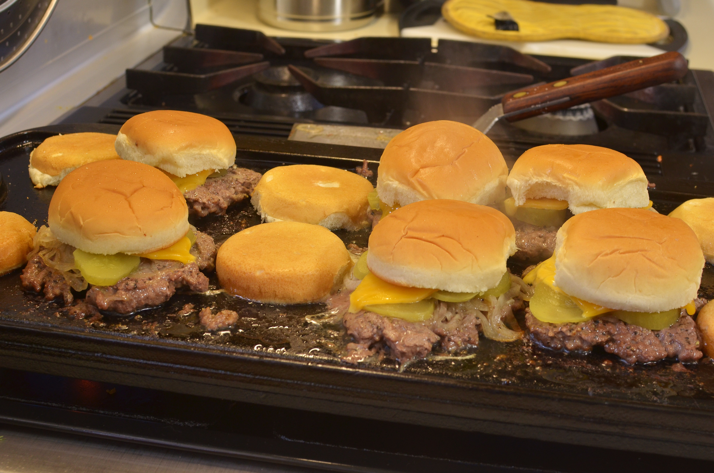

Home
Recipes

Eagle's Meals
A helpful weekly meal planner
About Us
This meal planner was created to help with those who are indecisive when trying to decide what to make for meals during the week. We do our best to have a wide variety of recipes from full on dinner meals to the delicious cookies that you will eat after.
Where the meals came from:
- Deseret Recipes
- Grand Plans, Homemade Recipe Book
- Missionary Meals, Homemade Recipe Book